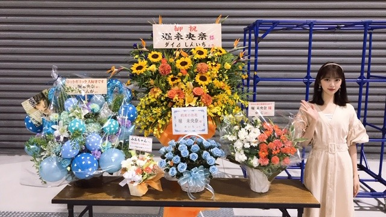
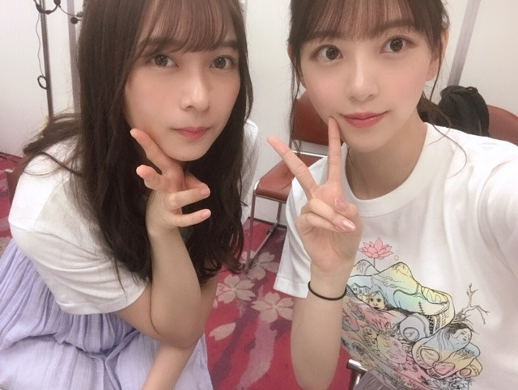
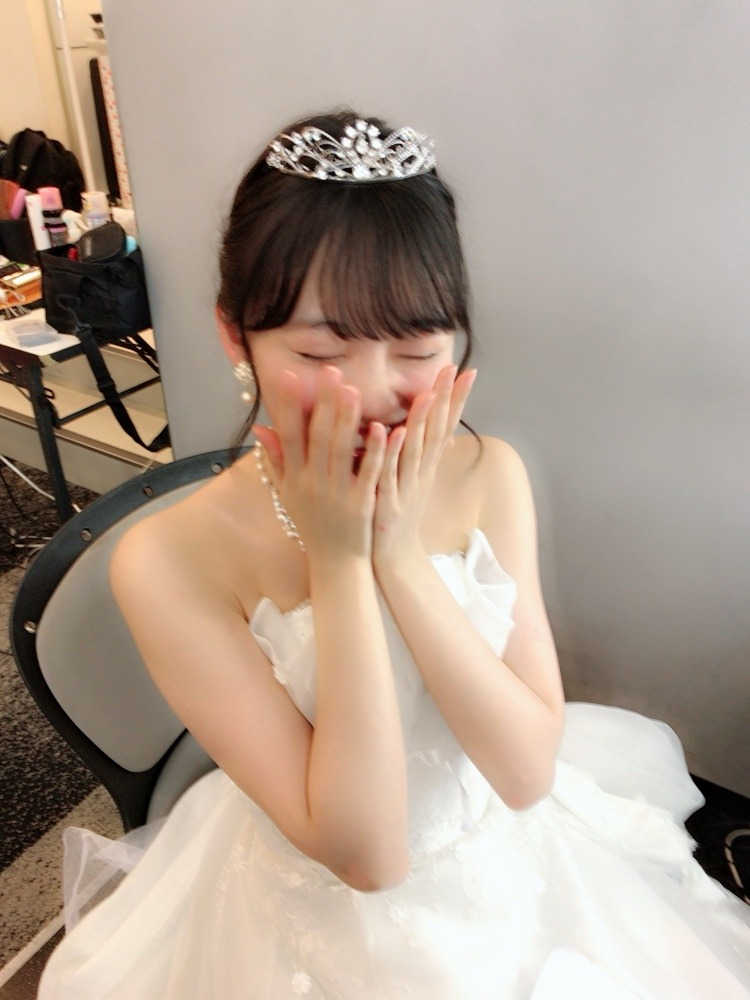

2019/1015Tue２３
やほ☺︎
２３歳になりました〜
もう、23歳？まだ、23歳？
うーん、
自分ではもう23なんだ！！という感じです
でも中身は１７歳くらいで止まってる気がします...笑

なんでもない日にもこうして素敵なお花や
ブログにコメントをくださるファンの皆さんには感謝しかありません☺︎
そして私の誕生日を祝ってくださりありがとうございます✨全部読んでますみてます
ちなみに、
堀家では0時迎えても誰一人わたしのお部屋に来てくれなくて寂しくて見に行ったらみんな寝てました。笑
朝祝うスタイルなの！
お母さんが朝起こしついでにおめでとう〜ってハグしてくれてハッピーでした☺︎

メンバーの中では絢音が1番最初にメールしてくれました❤︎
内容は秘密だけどすっごく嬉しかった！すき！
お仕事先でもいろんな方々に祝っていただき、本当に幸せものだなぁと感じます。
関わってくださる人全員に恩返しできるよう、
自分がなりたい自分に近づけるよう
これからも頑張りたいと思います☺︎
乃木坂46に出会えたから、皆さんに出会えてる。
一期一会を大切にしていきたいな。

挑戦し続ける人生でありたいので
どんな時も挑戦を選び、楽しみます！
これからもこんなわたしですが、どうか、よろしくお願いしますm(_ _)m
堀未央奈☺︎
2019/10/15 19:30
コメント(1156)
誕生日おめでとう
ウエディングドレス似合ってるね！
23歳の年は舞台に出演してほしいな！
ウエディングドレス似合ってるね！
23歳の年は舞台に出演してほしいな！
未央奈さん、23歳の誕生日おめでとうございます。いつも応援しています。
未央奈ブログ更新ありがとう☺︎
お誕生日おめでとう!!インスタのストーリーでも勝手ながらお祝いさせて頂きました!!
素敵な1年になりますように...⭐️
大好きです。
お誕生日おめでとう!!インスタのストーリーでも勝手ながらお祝いさせて頂きました!!
素敵な1年になりますように...⭐️
大好きです。
未央奈誕生日おめでとう！
23歳には見えないよーな見えるような
いろんな経験してね！
まだなりたい自分がいるんだね
向上心見習わなきゃな☺︎
表情が豊かで好きなんだ
23歳には見えないよーな見えるような
いろんな経験してね！
まだなりたい自分がいるんだね
向上心見習わなきゃな☺︎
表情が豊かで好きなんだ
メンバー初握手が未央奈だったよ！
可愛いさの衝撃は今でも忘れない！
ありがとう！
そして、誕生日おめでとう！！
可愛いさの衝撃は今でも忘れない！
ありがとう！
そして、誕生日おめでとう！！
お誕生日おめでとう！素敵な1年にしてね！
レコメン毎回聴いてるよ！
未央奈ちゃんは、忙しいはずなのに、ブログや755をたくさん更新していたり、女の子が憧れるようなスタイルを維持していたり、偉いなと思ってます！
もちろん2期生への想いが強いところも好きです！
発言や言葉にも強さを感じて、お目目が大きくてキレイなところも、ちょっと舌っ足らずなところも、お顔も、全部かわいいです！大好きです！
レコメン毎回聴いてるよ！
未央奈ちゃんは、忙しいはずなのに、ブログや755をたくさん更新していたり、女の子が憧れるようなスタイルを維持していたり、偉いなと思ってます！
もちろん2期生への想いが強いところも好きです！
発言や言葉にも強さを感じて、お目目が大きくてキレイなところも、ちょっと舌っ足らずなところも、お顔も、全部かわいいです！大好きです！
お誕生日おめでとう
どんどん綺麗になっていく未央奈の今後が楽しみ！
どんどん綺麗になっていく未央奈の今後が楽しみ！
未央奈ちゃん、お誕生日おめでとうございます。
23歳ですね。私的には、"もう"という感じがします。でも、ここまでの時の流れの中には、たくさんのいろんな想いが未央奈ちゃんの中にはあるのでしょうが、常に前へ前へと進み、挑戦しようとしている未央奈ちゃんの姿には、今までずっと未央奈ちゃんのファンでいることの幸せをいただいています。ありがとうございます。
未央奈ちゃんにとっては当たり前なのかもしれませんが、毎月毎月たくさんのブログを送ってくれることは、ファンとして本当に嬉しく、幸せなことです。2013年の未央奈ちゃんも、2019年の未央奈ちゃんも、ずっと未央奈ちゃんは未央奈ちゃんでい続けてくれていることは、そんな初期からのブログを見返すとよくわかります。
挑戦と前進をしながら大人になっていく未央奈ちゃんと、昔と変わらぬ少女っぽさも残る未央奈ちゃんを、まだまだ応援していきます。
「大人への近道」…この時期になると毎年ＭＶを観たくなります。男の私が観ても、しんみりしてしまいます。男にも身に覚えのある青春ですよね、このＭＶは。実は、個人的にあのＭＶの未央奈ちゃんが大好きです。おそらく未央奈ちゃんとしては、悔しさもよぎる時期だったと思われますが、でもあのＭＶには、そんな時の未央奈ちゃんだから表現出来たのであろう姿が刻印されているように思います。同時にそこに未央奈ちゃんの今の飽くなき挑戦宣言の源を感じます。今となっては、本当に尊い時だったのではないでしょうか。
23歳。大人になってきたんですね、未央奈ちゃんも。決して近道は見つからないでしょうが、挑戦を選ぶ未央奈ちゃんは、きっともっと大人の堀未央奈を見せてくれるのでしょうね。
２nd写真集、楽しみです。
お誕生日おめでとうございます。
23歳ですね。私的には、"もう"という感じがします。でも、ここまでの時の流れの中には、たくさんのいろんな想いが未央奈ちゃんの中にはあるのでしょうが、常に前へ前へと進み、挑戦しようとしている未央奈ちゃんの姿には、今までずっと未央奈ちゃんのファンでいることの幸せをいただいています。ありがとうございます。
未央奈ちゃんにとっては当たり前なのかもしれませんが、毎月毎月たくさんのブログを送ってくれることは、ファンとして本当に嬉しく、幸せなことです。2013年の未央奈ちゃんも、2019年の未央奈ちゃんも、ずっと未央奈ちゃんは未央奈ちゃんでい続けてくれていることは、そんな初期からのブログを見返すとよくわかります。
挑戦と前進をしながら大人になっていく未央奈ちゃんと、昔と変わらぬ少女っぽさも残る未央奈ちゃんを、まだまだ応援していきます。
「大人への近道」…この時期になると毎年ＭＶを観たくなります。男の私が観ても、しんみりしてしまいます。男にも身に覚えのある青春ですよね、このＭＶは。実は、個人的にあのＭＶの未央奈ちゃんが大好きです。おそらく未央奈ちゃんとしては、悔しさもよぎる時期だったと思われますが、でもあのＭＶには、そんな時の未央奈ちゃんだから表現出来たのであろう姿が刻印されているように思います。同時にそこに未央奈ちゃんの今の飽くなき挑戦宣言の源を感じます。今となっては、本当に尊い時だったのではないでしょうか。
23歳。大人になってきたんですね、未央奈ちゃんも。決して近道は見つからないでしょうが、挑戦を選ぶ未央奈ちゃんは、きっともっと大人の堀未央奈を見せてくれるのでしょうね。
２nd写真集、楽しみです。
お誕生日おめでとうございます。
これを機に堀ちゃんに初めてコメントします！
誕生日おめでとう♡これからお仕事とかたくさん頑張ってね。いつも私たちに元気をくれてありがとう。感謝してます。23歳って…お姉さん！って感じが致します…笑、23歳最高の年にしてくださいね！！
誕生日おめでとう♡これからお仕事とかたくさん頑張ってね。いつも私たちに元気をくれてありがとう。感謝してます。23歳って…お姉さん！って感じが致します…笑、23歳最高の年にしてくださいね！！
未央奈ちゃん23才誕生日から１日たったね。
あらためておめでとう。
明日のレコメンでの報告楽しみにしてるね。
これからも世界旅、写真集発売等楽しみがたくさんあります。
年末は歌番組で未央奈さんいっぱい見れるしね、今からワクワクしてます。
23才になっての活躍期待してます。
おやすみなさい。
あらためておめでとう。
明日のレコメンでの報告楽しみにしてるね。
これからも世界旅、写真集発売等楽しみがたくさんあります。
年末は歌番組で未央奈さんいっぱい見れるしね、今からワクワクしてます。
23才になっての活躍期待してます。
おやすみなさい。
23歳のお誕生日おめでとうございます！
ここ2週分の工事中期別対抗を観てて
改めて堀ちゃんの同期愛に感動しました
常に2期生の先頭にいるから風当たりが強い
こともあるだろうけどこれからも仲間思いの
優しい堀ちゃんのままでいてね応援してます！！
ここ2週分の工事中期別対抗を観てて
改めて堀ちゃんの同期愛に感動しました
常に2期生の先頭にいるから風当たりが強い
こともあるだろうけどこれからも仲間思いの
優しい堀ちゃんのままでいてね応援してます！！
堀さん、こんばんは♪
２３歳の誕生日おめでとう☆
よく映画の話をブログでしてくれてうれしいです。
今日は深川麻衣さんが出てるドラマを見ました。
堀さんは絢音ちゃんと親しいのですね。
堀さんのセカンド写真集は買えないのですが
本屋さんに表紙だけでも眺めに行きたいです。
最近、本屋さんで欅坂４６さんの
小池美波さんの写真集がありました。
表紙だけ眺めました。
今日のブログの写真は３枚目のが好きです。
結婚式のような服に思いました。
堀さんが好きです☆
２３歳の誕生日おめでとう☆
よく映画の話をブログでしてくれてうれしいです。
今日は深川麻衣さんが出てるドラマを見ました。
堀さんは絢音ちゃんと親しいのですね。
堀さんのセカンド写真集は買えないのですが
本屋さんに表紙だけでも眺めに行きたいです。
最近、本屋さんで欅坂４６さんの
小池美波さんの写真集がありました。
表紙だけ眺めました。
今日のブログの写真は３枚目のが好きです。
結婚式のような服に思いました。
堀さんが好きです☆
堀家では誕生日を
眠りながら祝うスタイルなのかな？


眠りながら祝うスタイルなのかな？
おめでとう
これからも応援してます！握手会行くね！
これからも応援してます！握手会行くね！
未央奈ちゃん遅れちゃったけどおめでとう！㊗️
テレビに写っているポニーテールの女の子可愛いなああ！と思って調べて、それからずっと未央奈ちゃんにはまってます
好きになったのは最近だけれど毎日癒されてるし、私もこんな風にかわいくなりたい！って思って頑張れてるよ〜ありがとう！
写真集ももちろん買うしこれからの活躍が楽しみです♡
23歳の年が未央奈ちゃんにとって良い一年となりますように！
テレビに写っているポニーテールの女の子可愛いなああ！と思って調べて、それからずっと未央奈ちゃんにはまってます
好きになったのは最近だけれど毎日癒されてるし、私もこんな風にかわいくなりたい！って思って頑張れてるよ〜ありがとう！
写真集ももちろん買うしこれからの活躍が楽しみです♡
23歳の年が未央奈ちゃんにとって良い一年となりますように！
未央奈ちゃん、こんばんは(^o^)/
昨日も前回のブログのコメントに書いたけど、改めて23歳の誕生日おめでとうございます( ＾∀＾)
ﾞ(pq´∀`)┌iiiiii┐(´∀`pq)ﾟﾟ
もう23歳かぁって感じですね(・o・)
中身(気持ち)が若いのは良いことだよ( ＾∀＾)
0時にみんな寝てるって未央奈の家族ってみんな早寝なんだね(・o・)
てか、毎朝お母さんに起こして貰ってるの？
ちゃんと自分で起きなきゃダメだよ(・o・)
昨日も前回のブログのコメントに書いたけど、改めて23歳の誕生日おめでとうございます( ＾∀＾)
ﾞ(pq´∀`)┌iiiiii┐(´∀`pq)ﾟﾟ
もう23歳かぁって感じですね(・o・)
中身(気持ち)が若いのは良いことだよ( ＾∀＾)
0時にみんな寝てるって未央奈の家族ってみんな早寝なんだね(・o・)
てか、毎朝お母さんに起こして貰ってるの？
ちゃんと自分で起きなきゃダメだよ(・o・)
堀ちゃん
おたおめだよ
23歳か〜
自分ではそんな感じしないよね笑
心の中はまだ子どものままな気もしちゃうし
でも、日々一歩ずつ成長しているんだよなぁ
みつを
おたおめだよ
23歳か〜
自分ではそんな感じしないよね笑
心の中はまだ子どものままな気もしちゃうし
でも、日々一歩ずつ成長しているんだよなぁ
みつを
お誕生日おめでとうございます‼︎
23歳もいい年になりますように(^-^)
未央奈さん‼︎
23歳は仕事とプライベートでどんなことに挑戦してしたいですか？
23歳もいい年になりますように(^-^)
未央奈さん‼︎
23歳は仕事とプライベートでどんなことに挑戦してしたいですか？
未央奈誕生日おめでとう
23歳もステキな１年でありますように。
23歳もステキな１年でありますように。
早いなー。乃木中の成人の会がこないだのことのように思われるよ！
23、24くらいの時ってすごい楽しかったな
誕生日おめでとう！これからもっといい人生にしてね
23、24くらいの時ってすごい楽しかったな
誕生日おめでとう！これからもっといい人生にしてね
お誕生日おめでとうございます！
素敵な1年にしてください！
素敵な1年にしてください！
ミオナおめでとう～
これからの活躍楽しみにしてます～
素敵な1年にしてください！！！
これからの活躍楽しみにしてます～
素敵な1年にしてください！！！
生涯でたった1人の
推しメンです！だいすきです！！！
ほりちゃんを応援できてよかった！
これからもずっと応援します！

推しメンです！だいすきです！！！
ほりちゃんを応援できてよかった！
これからもずっと応援します！
23歳の誕生日おめでとうございます！！
最近どんどん活躍していて見ていて嬉しいですが、こないだの全握のこともあって体調が心配です....無理せず！また1年頑張って下さい！ずっと応援してます
最近どんどん活躍していて見ていて嬉しいですが、こないだの全握のこともあって体調が心配です....無理せず！また1年頑張って下さい！ずっと応援してます
未央奈さま
改めまして...
23歳の誕生日おめでとうございます！
もう23なんだぁ～と言う気持ち良く、良く判ります。
2期生加入から全力疾走で6年経つんですものねぇ～
自分も仕事にのめり込んで没頭していた時は、ふと
気付いたら「えっ、もうこんな歳？って自分チョットは
成長してるの？」って成長の実感が少なかったから...
だから、「もう」って言うのはそれ程に夢中で必死に
駆け抜けて来たって事ではないかな？と思う次第です。
良くも悪くも充実していた証ではないでしょうか。
でも..この日からまた、まだ23歳として突き進んで行けば
良いのです！ そう言う未央奈を見守りたいです。
1年、1年がゼロからの出発です。
精神年齢17歳！ これもあっという間の6年だったと言う
証ですって。
がんばれ～未央奈！ まだまだ夢を実現させろ！
そしてそして、宝物の様な2枚の写真をありがとう！
・絢音ちゃんとのツーショット（並ぶとカワイイさ倍増！）
・シンデレラの様なお姿の美しくも可愛らしい未央奈
ガラスの靴履いてる中からの履けない？って
爆笑？、弾けるの笑顔が素敵
こう言うプライベート的な写真（特に絢音ちゃんとの
ツーショット）などは写真集には載らないかなぁ～。
これからも当然！応援していきますので、挑戦ヨロ
ファン一同きっと楽しみなはず....
最後に、もいち度、誕生日おめでとう。
改めまして...
23歳の誕生日おめでとうございます！
もう23なんだぁ～と言う気持ち良く、良く判ります。
2期生加入から全力疾走で6年経つんですものねぇ～
自分も仕事にのめり込んで没頭していた時は、ふと
気付いたら「えっ、もうこんな歳？って自分チョットは
成長してるの？」って成長の実感が少なかったから...
だから、「もう」って言うのはそれ程に夢中で必死に
駆け抜けて来たって事ではないかな？と思う次第です。
良くも悪くも充実していた証ではないでしょうか。
でも..この日からまた、まだ23歳として突き進んで行けば
良いのです！ そう言う未央奈を見守りたいです。
1年、1年がゼロからの出発です。
精神年齢17歳！ これもあっという間の6年だったと言う
証ですって。
がんばれ～未央奈！ まだまだ夢を実現させろ！
そしてそして、宝物の様な2枚の写真をありがとう！
・絢音ちゃんとのツーショット（並ぶとカワイイさ倍増！）
・シンデレラの様なお姿の美しくも可愛らしい未央奈
ガラスの靴履いてる中からの履けない？って
爆笑？、弾けるの笑顔が素敵
こう言うプライベート的な写真（特に絢音ちゃんとの
ツーショット）などは写真集には載らないかなぁ～。
これからも当然！応援していきますので、挑戦ヨロ
ファン一同きっと楽しみなはず....
最後に、もいち度、誕生日おめでとう。
未央奈～☆☆
誕生日おめでとうー！！
朝祝うスタイルって響きがなんか面白い。
家族はこのスタイルが多いのかもね。笑
あ、でもね、0時を迎えたとき、ニコルとプティが
「未央奈ちゃん、お誕生日おめでとう！！」
っていう目線を送ってたかもよー笑
未央奈の挑戦をいつでも応援しているよ！
誕生日おめでとうー！！
朝祝うスタイルって響きがなんか面白い。
家族はこのスタイルが多いのかもね。笑
あ、でもね、0時を迎えたとき、ニコルとプティが
「未央奈ちゃん、お誕生日おめでとう！！」
っていう目線を送ってたかもよー笑
未央奈の挑戦をいつでも応援しているよ！
ほりっぴ～、ナンチです♪
23th Happy birthday
毎年ほりっぴ～にお祝いコメントが言えるのが幸せでならないよ
今年も陰日向から推していきますね
繊細なほりっぴ～が大好きだよ
23th Happy birthday
毎年ほりっぴ～にお祝いコメントが言えるのが幸せでならないよ
今年も陰日向から推していきますね
繊細なほりっぴ～が大好きだよ
Q.下記の１～５は、とある未央奈推しの身に実際に起こった出来事である。これらをファン歴に沿って正しい順番に並び変えなさい
１．ラジオの際にネット局紹介などで聞くことが出来、隠れファンも大勢いる（と思われる）みおちゃん独特のイントネーション。そのイントネーションの矯正を図っていることがラジオ内で明かされる。その陰ながらの努力に"さすが未央奈！"と深く感銘を受けながらも、"独特でかわいいのに…"と多くの未央奈推しが密かに涙した（と思われる）。かく言う私もその一人
２．“放っておけないアイドル”、“波長が合う（と思われる）アイドル”など、いろいろな称号がある中で、みおちゃんが"自分内で勝手にランキング"、"理想のアイドル"部門で堂々の一位に輝く。（その後、殿堂入り ）
）
３．初めて訪れた乃木坂４６のホームページ。その時覗いてみた未央奈ブログの自然な感じ、清涼感に惹かれる。これがその後のリピートのきっかけとなる
５．雑誌の単独表紙や付録も増えて嬉しい半面、次第に置き場所に困るようになる。なお一層の電子化が進んで欲しいと思いつつも、付録やおまけの存在が悩ましいところでもある
------------------------
あの頃から今も変わらず沢山のSNS等での発信。
みおちゃん、いつも楽しい時間をありがとう
これからも楽しい時間を過ごせますように
そして、２３歳になったみおちゃんが沢山のしあわせな時間を過ごせますように
あ、それからもう一つだけ。美白は良いと思うのだけど、白過ぎて時々体調が心配になる事があるので、美白もほどほどに。太陽光も適度に浴びて、身体にとりいれていって欲しいなって思ってます
やっぱ であって欲しいからね
であって欲しいからね
１．ラジオの際にネット局紹介などで聞くことが出来、隠れファンも大勢いる（と思われる）みおちゃん独特のイントネーション。そのイントネーションの矯正を図っていることがラジオ内で明かされる。その陰ながらの努力に"さすが未央奈！"と深く感銘を受けながらも、"独特でかわいいのに…"と多くの未央奈推しが密かに涙した（と思われる）。かく言う私もその一人
２．“放っておけないアイドル”、“波長が合う（と思われる）アイドル”など、いろいろな称号がある中で、みおちゃんが"自分内で勝手にランキング"、"理想のアイドル"部門で堂々の一位に輝く。（その後、殿堂入り
３．初めて訪れた乃木坂４６のホームページ。その時覗いてみた未央奈ブログの自然な感じ、清涼感に惹かれる。これがその後のリピートのきっかけとなる
５．雑誌の単独表紙や付録も増えて嬉しい半面、次第に置き場所に困るようになる。なお一層の電子化が進んで欲しいと思いつつも、付録やおまけの存在が悩ましいところでもある
------------------------
あの頃から今も変わらず沢山のSNS等での発信。
みおちゃん、いつも楽しい時間をありがとう
これからも楽しい時間を過ごせますように
そして、２３歳になったみおちゃんが沢山のしあわせな時間を過ごせますように
あ、それからもう一つだけ。美白は良いと思うのだけど、白過ぎて時々体調が心配になる事があるので、美白もほどほどに。太陽光も適度に浴びて、身体にとりいれていって欲しいなって思ってます
やっぱ
お誕生日おめでとうございます
今年も良い一年になりますように
これからの活躍も応援しています！
今年も良い一年になりますように
これからの活躍も応援しています！
みおちゃん、お誕生日おめでとう。
私の中でも「もう23歳か…」となっております 笑
なんだかんだで、みおちゃんを応援して数年経ち…今年もまた、みおちゃんのお誕生日をお祝いできて幸せ者です、私。
年々進化し大人のステキな女性になっていくみおちゃんを見ながら、私も頑張ろうって思わされます。
いつもありがとう。
とっても優しくて可愛い世界で一番の推しメン。
あなたに出会えて私は幸せです。23歳も大好きいいい。
幸多き一年になりますように！
私の中でも「もう23歳か…」となっております 笑
なんだかんだで、みおちゃんを応援して数年経ち…今年もまた、みおちゃんのお誕生日をお祝いできて幸せ者です、私。
年々進化し大人のステキな女性になっていくみおちゃんを見ながら、私も頑張ろうって思わされます。
いつもありがとう。
とっても優しくて可愛い世界で一番の推しメン。
あなたに出会えて私は幸せです。23歳も大好きいいい。
幸多き一年になりますように！
堀さん、こんばんは。
お花やコメントに加え家族やメンバー、仕事場と沢山祝ってもらって嬉しいですね。なんでもない日にも堀さんを想ってしまう人が沢山いるのは、きっと堀さんが貰った愛情を何倍にもして返す人だからですね。
２３歳も理想に向かって突き進んで行ってくださいね。いつも応援してます。これからもよろしくお願いします。
最後の写真は綺麗すぎるくらいに綺麗で切ないです。好きな人が綺麗なドレス着て笑顔なのに切なくて仕方がないだなんて、ウェディングドレスって特別なんですね。
あと岩本さんのブログの写真がとても姉感あって良かったです。それと乃木坂工事中でマシュマロ落として地団駄を踏む鈴木さんに寄り添う姿からは母感すら感じました。日々魅力が増えていってることが堀さんの魅力ですね。
お花やコメントに加え家族やメンバー、仕事場と沢山祝ってもらって嬉しいですね。なんでもない日にも堀さんを想ってしまう人が沢山いるのは、きっと堀さんが貰った愛情を何倍にもして返す人だからですね。
２３歳も理想に向かって突き進んで行ってくださいね。いつも応援してます。これからもよろしくお願いします。
最後の写真は綺麗すぎるくらいに綺麗で切ないです。好きな人が綺麗なドレス着て笑顔なのに切なくて仕方がないだなんて、ウェディングドレスって特別なんですね。
あと岩本さんのブログの写真がとても姉感あって良かったです。それと乃木坂工事中でマシュマロ落として地団駄を踏む鈴木さんに寄り添う姿からは母感すら感じました。日々魅力が増えていってることが堀さんの魅力ですね。
お誕生日おめでとうございます！
ウエディングドレス姿が、まぶしいです!
ウエディングドレス姿が、まぶしいです!
「ウキウキ ウキキキ ウウウキキキ キキキウキキ」
お猿さん語で「未央奈は永遠に不滅です」
まだまだアイドルとしての可能性を未央奈は秘めている
と思いますよ。頑張れ未央奈。
お猿さん語で「未央奈は永遠に不滅です」
まだまだアイドルとしての可能性を未央奈は秘めている
と思いますよ。頑張れ未央奈。
挑戦ね。すごいな。
パワーをありがとう。
パワーをありがとう。
堀ちゃん、お誕生日おめでとうございます‼️23歳の1年間も最高の1年間にしてください。これからもずーっと応援しています‼️2冊目の写真集楽しみにしています‼️
だいぶ遅れましたが、お誕生日おめでとうございます！
23歳になり一段と輝いている未央奈さんの姿を期待してます。
今現在進行形で輝いていることは承知ですが。
これからも応援しています。
23歳の未央奈さんに幸あらんことを！
23歳になり一段と輝いている未央奈さんの姿を期待してます。
今現在進行形で輝いていることは承知ですが。
これからも応援しています。
23歳の未央奈さんに幸あらんことを！
未央奈さん、後れ馳せながら、23歳の誕生日おめでとうございます。毎週、コンスタントにブログをアップしているのをみて、地道なことに一生懸命で、心を打たれます。この一年は、そんな未央奈さんの地道な活動が、実を結ぶ一年となります。今まで頑張ってきたのはこの為だったんだ、というような素敵なご褒美が待っています。23歳の未央奈さんは、最高の運勢なので、己を信じて頑張ってください!!!!
ブログ更新ありがと！
未央奈！23歳のお誕生日おめでとう！！
これからも応援するからありのままの未央奈で頑張ってね！
未央奈！23歳のお誕生日おめでとう！！
これからも応援するからありのままの未央奈で頑張ってね！
看板娘の堀未央奈さん、お誕生日おめでとうございますってなもんで
誕生日おめでとう
寒くなってるから風邪ひかない様にね。
素敵でハッピーな1年過ごしてね、
寒くなってるから風邪ひかない様にね。
素敵でハッピーな1年過ごしてね、
誕生日おめでとう！素敵な１年になりますように！！
未央奈ちゃん お誕生日＋1日（にち） おめでとう！！ (^_^)
写真は ウエディングドレス ですか！？
さっき 目覚めて 寒いと思ったら、
徳島 外気 16.1℃だった！！
お互い 風邪引かないようにしましょう。
ばいばい (@^^)/~~~ お元気で！！ (^_^)v
写真は ウエディングドレス ですか！？
さっき 目覚めて 寒いと思ったら、
徳島 外気 16.1℃だった！！
お互い 風邪引かないようにしましょう。
ばいばい (@^^)/~~~ お元気で！！ (^_^)v
ウェディングドレスが似合い過ぎてて綺麗過ぎて苦しいです。こんなお嫁さんが欲しい。
お誕生日おめでとうございます！
誕生日はおなかいっぱい食べれましたか？
お誕生日おめでとうございます！
誕生日はおなかいっぱい食べれましたか？
未央奈ちゃん、お誕生日おめでとうございます
未央奈ちゃんは加入時からずいぶん大人になって、でも変わらない部分もちゃんとあって。
きっとこれからも未央奈ちゃんは未央奈ちゃんなんだろうなって思います。
伝わったかな？？笑
もう23歳なのか！？なんだかあっという間だなぁ笑笑
こうやって毎年、お誕生日をお祝いできること、幸せです。
出逢ってくれてありがとうございます
これからも未央奈ちゃんの活動を応援していきます！！
それではこの辺で！！！
素敵な一年になりますように。
＃Happy Birthday
＃祝23
＃いつもありがとう
＃レコメン
未央奈ちゃんは加入時からずいぶん大人になって、でも変わらない部分もちゃんとあって。
きっとこれからも未央奈ちゃんは未央奈ちゃんなんだろうなって思います。
伝わったかな？？笑
もう23歳なのか！？なんだかあっという間だなぁ笑笑
こうやって毎年、お誕生日をお祝いできること、幸せです。
出逢ってくれてありがとうございます
これからも未央奈ちゃんの活動を応援していきます！！
それではこの辺で！！！
素敵な一年になりますように。
＃Happy Birthday
＃祝23
＃いつもありがとう
＃レコメン
おめでとう
素敵な一年になります(断言)！
素敵な一年になります(断言)！
堀さん、おはようございます。
祝！ 二十三歳のお誕生日おめでとうございます。新たな一年が堀さんにとってさらに大いなる飛躍の年となることを願っています。
実は昨日中にお祝いのコメント寄せようと思っていたのですが、いつの間にか寝ておりました（←こら 笑）。僕も朝お祝いするスタイルということで（ふふ）。
いつまでも挑戦していく気持ちは大切。これからもいろいろなことに挑戦して新たな分野をきり拓いていってほしいと思います。変わらず応援しています。がんばって！
ではまたコメント寄せます。今日もいい日でありますように。
さらばだ、また会おう！（気球に乗って去りぬ〜）
祝！ 二十三歳のお誕生日おめでとうございます。新たな一年が堀さんにとってさらに大いなる飛躍の年となることを願っています。
実は昨日中にお祝いのコメント寄せようと思っていたのですが、いつの間にか寝ておりました（←こら 笑）。僕も朝お祝いするスタイルということで（ふふ）。
いつまでも挑戦していく気持ちは大切。これからもいろいろなことに挑戦して新たな分野をきり拓いていってほしいと思います。変わらず応援しています。がんばって！
ではまたコメント寄せます。今日もいい日でありますように。
さらばだ、また会おう！（気球に乗って去りぬ〜）
未央奈誕生日おめでとう！！
23歳って感じしないんだけど笑 なんか成人の時から3年経った気がしない笑
これからもがんばれ！！応援します
23歳って感じしないんだけど笑 なんか成人の時から3年経った気がしない笑
これからもがんばれ！！応援します
未央奈さん、お誕生日おめでとうございます。私も好きです。誕生日近い。最近、岐阜での仕事多くて楽しいです。小さい頃から、高山とかは、何回か行ってたんですよね。お互いによいとしにしましょう。これからも応援してます。
未央奈さん！23歳のお誕生日おめでとうございます❗
これからも頑張ってくださいね。
日曜日の握手会に行きます。
これからも頑張ってくださいね。
日曜日の握手会に行きます。


23歳なんだねー
僕は3月に22歳になる予定ですが
歳に見合った人になれるよう邁進しております
一緒に頑張ろうー